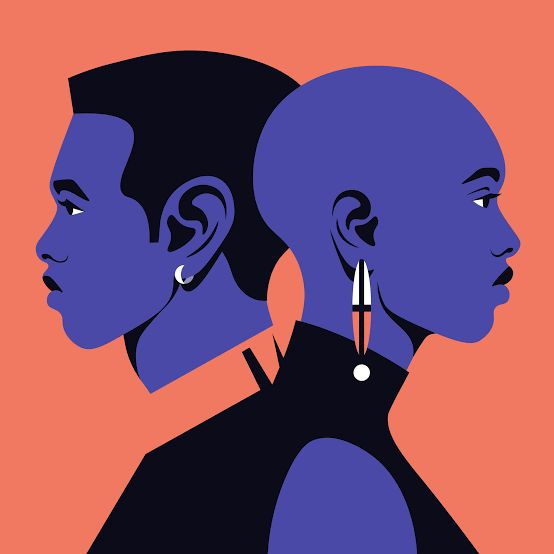

Orientación Asexual
La orientación asexual es una identidad dentro del espectro sexual en la cual una persona no experimenta atracción sexual hacia otras personas. Esto no significa que las personas asexuales no puedan formar relaciones románticas o emocionales, simplemente que no sienten atracción sexual.
Características de la orientación asexual:
- No experimentan atracción sexual hacia otras personas.
- Pueden sentir atracción romántica o emocional.
- La orientación asexual es válida y no es una condición que necesite ser "curada" o cambiada.
Preguntas comunes sobre la orientación asexual:
- ¿Las personas asexuales tienen relaciones románticas?
Sí, las personas asexuales pueden tener relaciones románticas significativas y emocionales.
- ¿Es lo mismo ser asexual que no tener deseo sexual temporalmente?
No, la orientación asexual es una identidad sexual permanente, no simplemente una fase temporal de falta de deseo sexual.
- ¿Las personas asexuales pueden tener hijos?
Sí, las personas asexuales pueden tener hijos biológicos o adoptar, si así lo desean, ya que la orientación sexual no afecta la capacidad de reproducción.

🢀